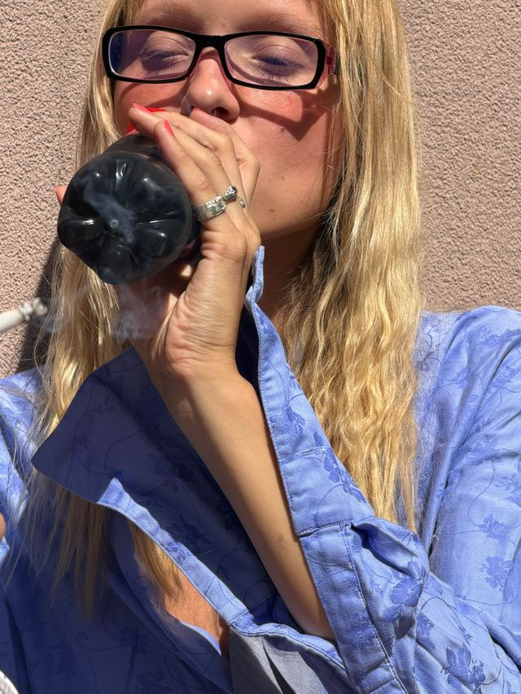

o mnie
Nazywam się Laura i robię pierścionki. Nie mam zespołu, katalogu ani magazynu — mam stół, narzędzia i głowę pełną kształtów, których jeszcze nie widziałam w sklepach.

od jednej obrączki
Pierwszy pierścionek zrobiłam na własny ślub, bo nie mogłam znaleźć niczego, co by mi się naprawdę podobało. Znajomi zaczęli pytać, gdzie to kupiłam. Odpowiedź „sama zrobiłam" powtarzała się na tyle często, że w końcu zamieniła się w pracownię.
Dziś każdą rzecz projektuję i wykuwam sama, w małej pracowni w Warszawie — najczęściej z metali z odzysku i zawsze w krótkich seriach.
krótka historia
Domowy warsztat, jedna obrączka i mnóstwo prób, które się nie udały — ale nauczyły mnie roboty.
Własna pracownia w Warszawie i pierwsze sygnety, które ktoś inny niż ja chciał nosić.
Ponad 600 zrobionych pierścionków, obrączki ślubne na zamówienie i wciąż ten sam jeden stół.
zwykłe dni



chciałam, żeby noszenie pierścionka było trochę jak noszenie ulubionego koloru przy sobie przez cały dzień.
— Lauranapisz, kiedy chcesz
Najlepiej dogadujemy się mailowo albo na Instagramie. Bez formularzy-widmo i automatów — piszę do Ciebie ja.